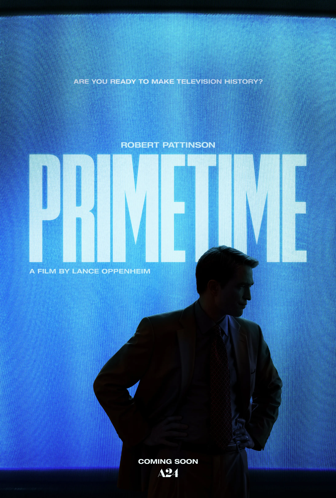
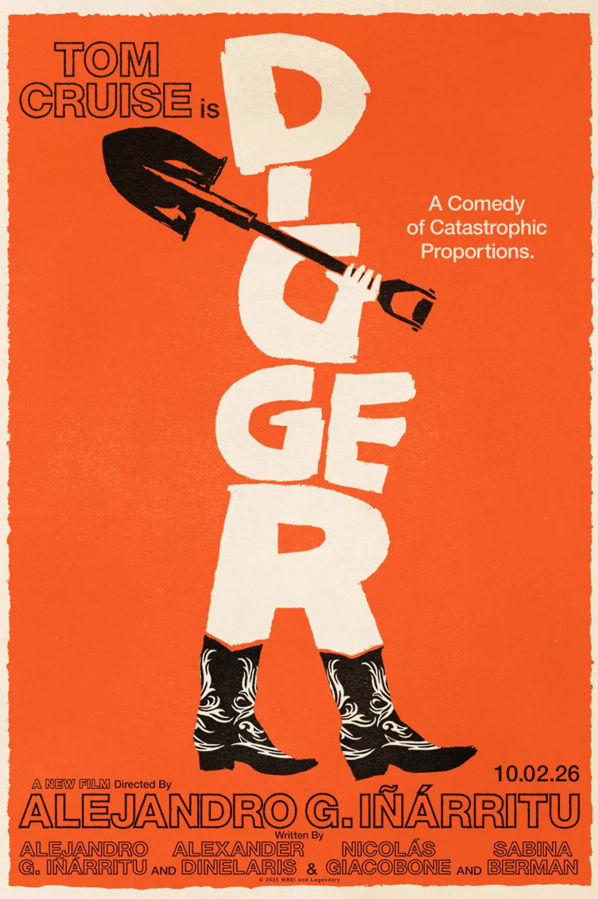
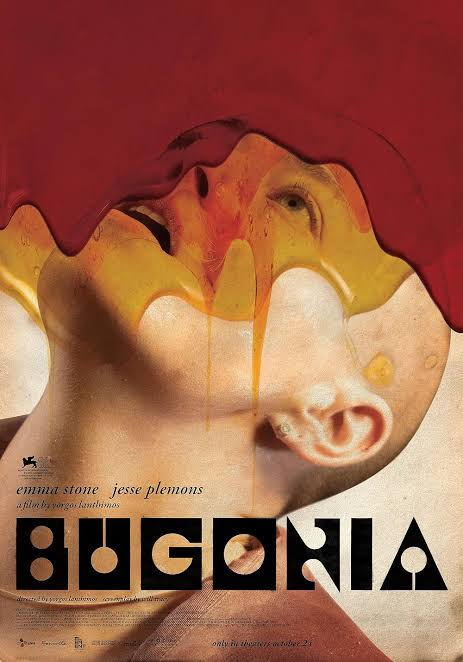
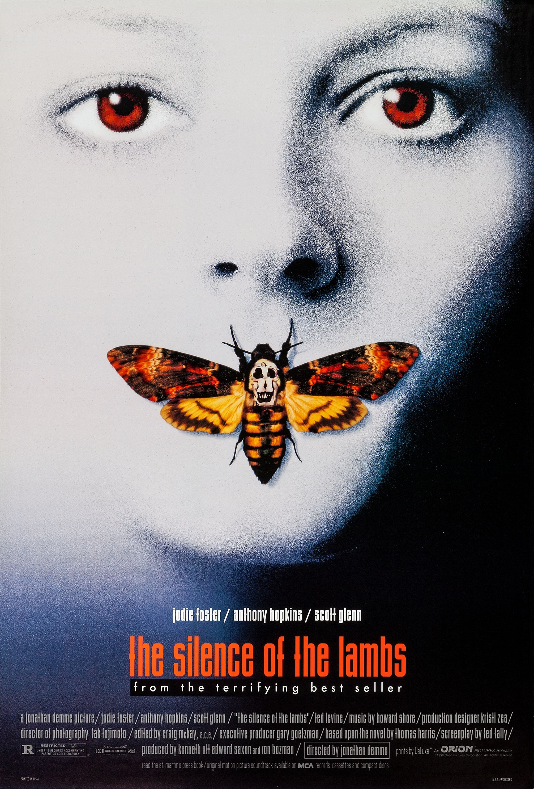

Primetime
7/10
it was a good movie, the cinematography was a 10, but it lacked a sort of hooking feature, the whole movie felt like you should enjoy it more, it is enjoyable but i feel that the cinematography does carry it to the 7 if it was shot normally it would be a 6 or less. but it was good, intresting pressure and feelings. it was pretty good. i think my favorite part in the movie was the staring scene, just very strange red and unique. the feel of the movie was like obsessive/hazy evil anxiety. actually the coolest thing in the movie was the snap back to his past where he got a emmy for his work talking about missing children in india and this absolute evil that you get to see from a kids perspective, and that was cool, i want a movie about that. it looked like a super evil guy that had me very intrested in finding it, also the "whale" predator was instresting just the build up you could really feel the weight of wanting to catch it. so i think i take it back its a 7 all around but the cinematography definetly puts it there.

DIGGER
7/10
It was a good movie, yea it was very intresting. the oil fracking fall was very interesting aswell as the barons nephew. the feeling was very dystopian one day ending stuff. the cinematography was nice, very cool film set expecially the roman arena thing. the main guy was intresting, i mean i dont have much to say sadly. it was a good movie.

Bugonia
6/10
Now the rating is low yes, but i did infact enjoy the movie. I think that the idea is cool, i liked the progression where you really had to ask if she was a alien or this guy is a wacko, i really did switch on and off the whole movie which was good. now the ending was just a normal ending, i wanted him to see it expecially how much he lost at the end i was hoping in my happy mind that he should atleast get that. i think my favorite part was the alien killer find from the girl, then her turning lowkey scary on the stairs, i think that was a good point in the movie, but the movie was good i mean i cant say too much about it. cool alien vs man kidnapping movie,, 1 of 1

silence of the lambs
7.7/10
Best movie on the rating list so far, hannabl lecter the entire movie was very intresting, and very very sinister which i liked, i enjoyed how lecter was a sort of god in the perspective of the viewer and he was just waatching over what was going on. also just the actual killer was evil and quite intresting and i think the length was pefect aswell just how the progression went, i really liked the movie alot. my favorite part of course is when hannable excapes very very fun. good movie good vibes, very journey watcher